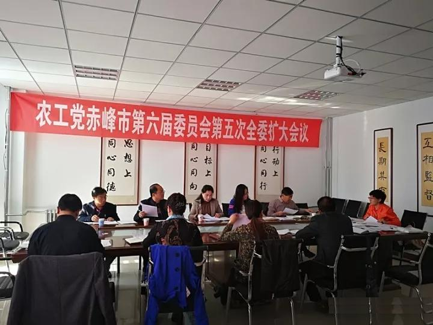

10月19日，农工党赤峰市委六届五次全委扩大会议召开，会议由农工党赤峰市委主委、赤峰市政府副市长李艳茹主持，农工党赤峰学院委员会、元宝山区总支和各支部主委参加会议。
会议传达学习了习近平总书记在中共十九大开幕式上所作的工作报告，审议通过了《农工党赤峰市委监督委员会的工作条例（草案）》和《农工党赤峰市委监督委员会工作规则》，研究确定了监督委员会成员名单。农工党各基层组织介绍了2017年度调研工作开展及撰写调研报告情况，与会人员就调研报告中存在的问题进行了深入探讨和交流。
会议要求，各位委员要积极组织带领本支部成员通过例会学习、微信平台等形式认真学习、深刻领会、全面贯彻十九大会议精神，紧密团结在以习近平为核心的党中央周围，以十九大精神为引领立足本职、心系农工、以更加饱满的精神状态投入到工作中去，履行好参政党职能。监督委员会成立后要积极探索、创新工作，制定好工作计划，做好监督工作。要高度重视2017年度调研报告撰写工作，认真梳理会上提出的修改意见和建议，力争撰写出高质量调研报告，为领导科学决策提供参考。
会议还研究讨论并吸纳了11名农工党新党员，并对年终其他工作进行了安排部署。